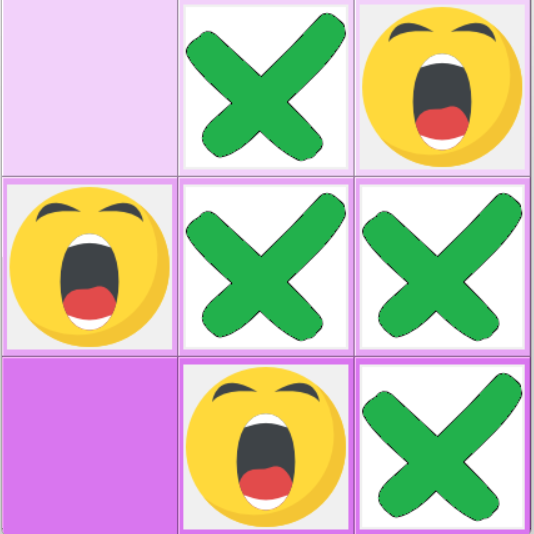

This project was one of my first attempts at creating a graphical-user interface (GUI). After becoming familiar with Python in my ICS 110P class, my goal behind this was to use my previous skills to create something that the user can interact with. I decided to make a simple game (tic-tac-toe), so that I can focus on the key aspects of abstraction in classes and function execution. The Tkinter library was used to help create the elements of the GUI.
The Tkinter mod was mainly used to set up some small details relating to the main frame of the window. This included setting up an icon image, title, and non-resizable window, which allowed the tic-tac-toe board to be square in nature upon execution. Embedded within the code include 4 main functions: play(), press(), checkWin(), and clear(). Each function will run based on the user’s performed action when interacting with the GUI.
Here is a small snippet of code for the press() function with parameters of the turn order and the row + column position of the respective square on the board:
# Define a function called press
# Allows user to check which button user presses
def press(num,r,c):
# Get global variables
global count, click
# Create an if-else statement to determine which image will appear
# (x or o) based on a click
if click == True:
labelPhoto = Label(root, image = xPhoto)
labelPhoto.grid(row = r, column = c)
# Create nested multi-way if-else statements to set the pressed
# button number to a text varaiable for that button number
if num == 1:
btn1.set("X")
elif num == 2:
btn2.set("X")
...
else:
btn9.set("X")
count += 1
click = False
checkWin()
...
One of the main things that I got out of the project was realizing how important implementation details were. I struggled with some of the technicalities in syntax when writing functions from the Tkinter library. The process of finding the right data types, keywords, and values as the parameters for functions was tedious. Other significant challenges in the debugging process included connecting a clickable action, such as a button, to an object and understanding the directory paths for each file included in the program. Although there were a lot of setbacks with this project, I gained the valuable experience of attempting to understand the abstract documentation of imported libraries. I also learned that string values can be set as objects and passed on as parameters in functions. In terms of a more general sense, I learned the importance of utilizing resources effectively and persevering through tough stumbling blocks.